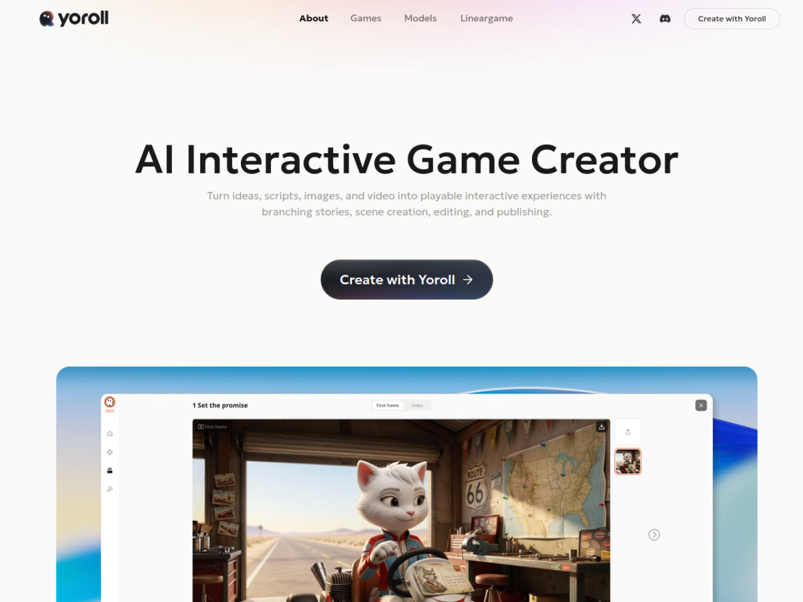
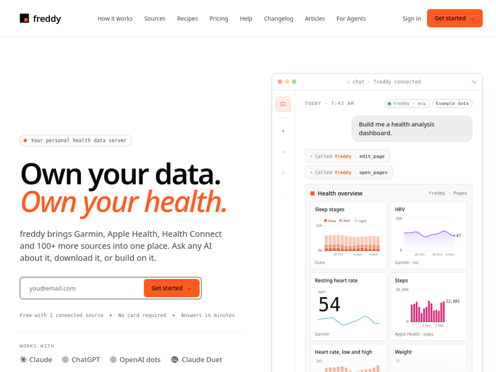
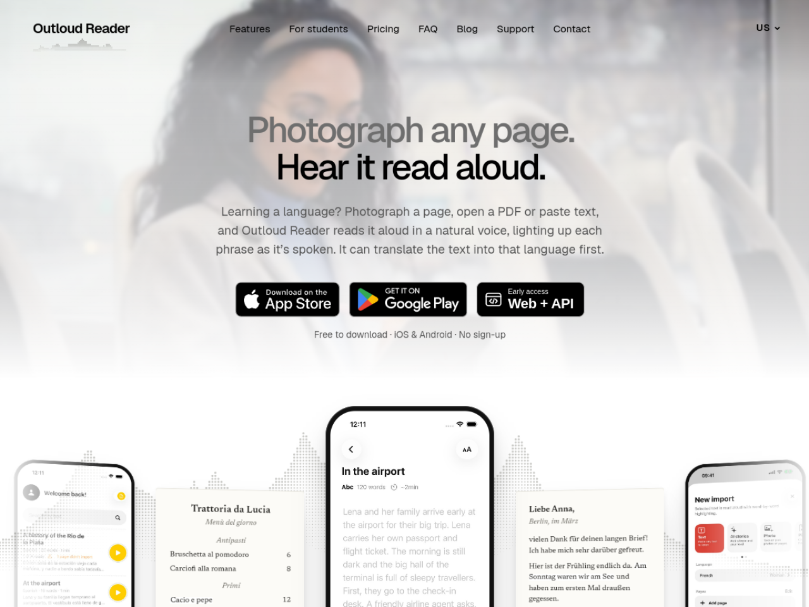
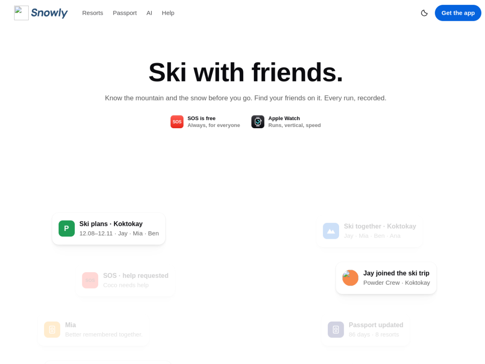
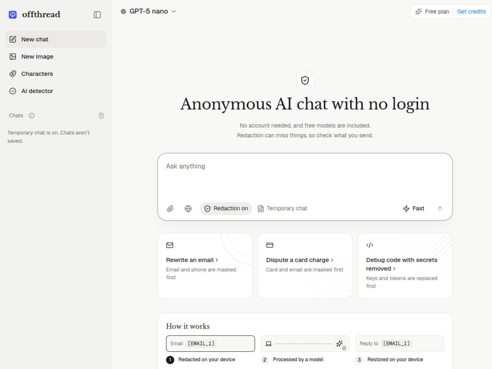

11月24日 周二

Yoroll AI 互动故事游戏创作
把一段故事、图片或视频变成可点选分支的「可玩电影」，不需要游戏引擎、不需要写代码，由 AI 起草剧本、角色与分镜。

freddy 个人健康数据中枢
把 Apple Health、Health Connect、Garmin、Oura 等 100+ 数据源和体检报告收进一个私人数据库，再让 ChatGPT、Claude 等任意 AI 读取并回答你的健康问题。

Outloud Reader 拍照朗读器
拍下书页或打开 PDF，用自然语音逐句朗读并高亮当前句，通勤走路时也能把纸质内容变成听力练习。

Snowly 滑雪同伴记录
为「一起去滑雪」设计的手机与手表 App：约伴、雪场地图上看队友位置、自动记录每一趟雪道，还能把滑雪数据交给 ChatGPT/Claude 提问。

Offthread 匿名脱敏 AI 聊天
免登录的匿名 AI 聊天：发送前在浏览器本地把邮箱、电话、密钥、卡号替换成占位符，模型回复后再还原，聊天记录只存在本机。